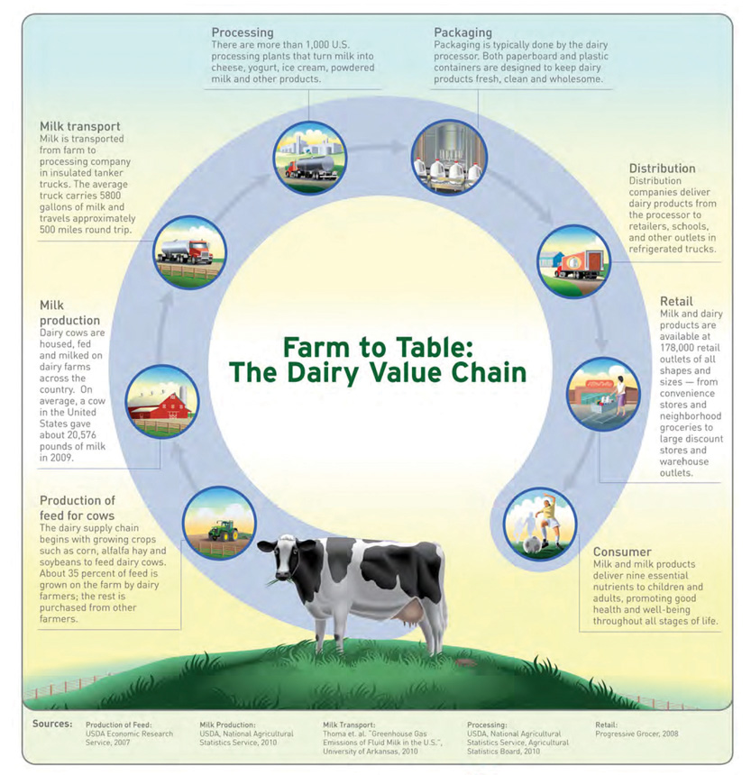
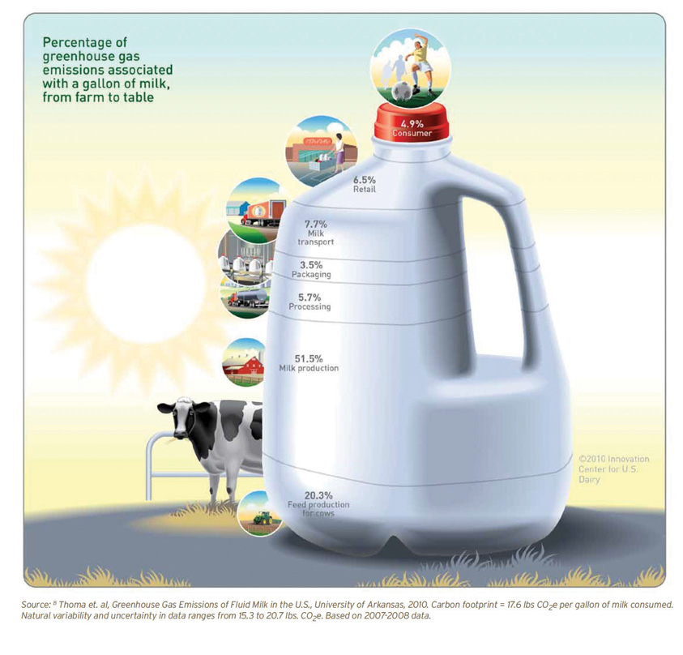
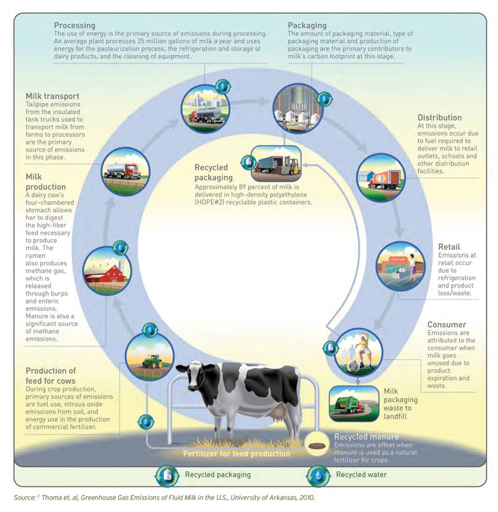
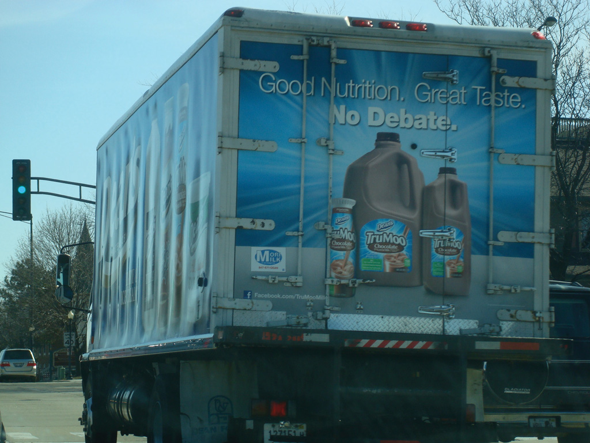

Figure 10.1 Oakhurst Logo

Source: Wreaths Across America, http://www.wreathsacrossamerica.org/logo/.
Oakhurst Dairy is setting the standard for business and organizations in our state and throughout the country.
Maine US Senator Olympia Snow, quoted regarding Oakhurst Dairy’s commitment to improving the environment.
Oakhurst Dairy’s profitability has benefitted from the company taking a leadership role in addressing greenhouse gas (GHG) emissions in the US dairy industry.The authors wish to thank Clean Air Cool Planet (CA–CP) and Bob Sheppard, chief financial officer and vice president of the corporate program, for assistance and permission to use the Oakhurst Dairy Case Study, “Taking All the Right Steps: A Maine Dairy Reduces Its Carbon Footprint,” as partial source material for this case. Oakhurst Dairy is a featured CA–CP Co-op Planet Corporate Partner. See http://www.cleanair-coolplanet.org/about/partners.php. In the process of its carbon footprint mappingProcess to identify and describe the level and intensity of carbon emissions for an activity, process, operation, enterprise, individual, animal, or other carbon dioxide-equivalent (CO2e) activity or process. the company identified how to reduce its GHG emissionsPollution released by residential, commercial, and industrial facilities. and also identified innovative ways to improve operational efficiencies, reduce operational costs (mostly energy costs), and enhance profits.
Oakhurst Dairy has changed over time. The long established northern New England dairy company no longer owns any dairy farms. It makes its money by processing milk bought from dairy farms. It owns no cows. It buys its raw milk from local dairy farmers and sells its processed milk to grocery stores and retailers such as Walmart and 7-Eleven.
The company, under the Bennett family ownership, has become one of northern New England’s largest independent milk processors. Oakhurst’s approach is to build brand equity and increase profits over time. This has been supported by investing in operation management practices that reduce costs and increase brand awareness and loyalty with the dissemination of information about the company’s practices that reduce its carbon footprint.
Oakhurst’s sustainable business approach includes (a) senior management commitment to sustainable business practices in its operations and its supply chain, (b) integration of sustainable goals and practices in the company’s business systems, (c) use of operating and financial reports and communications, and (d) monitoring of environmental results and implementation of continuous improvements.
This case will highlight how the company, by adopting sustainable business practices throughout its operations, saved more than $620,000 in annual fuel costs. These are savings that have contributed directly to Oakhurst’s financial bottom line. This includes savings from a $343,000 investment in solar panels at two of its facilities, resulting in annual savings of $52,500 (at a fuel cost of $3.50 per gallon) and representing a 6.5 year payback period on their investment. With an estimated life of thirty years, the solar panel investment alone will save Oakhurst $1.2 million over the life of the solar panels and lower its carbon emissions by 176 metric tons annually.
The founding family of Oakhurst, the Bennett family, has managed a successful dairy business based out of Portland, Maine, for ninety years. This is not a simple accomplishment. The dairy industry is dynamic and fiercely competitive, and Oakhurst has become the largest independent dairy processor in northern New England. The company is privately owned and as such its financial information is not publically available. Much of the information from this case is garnered from company interviews and a study of the company by Clean Air–Cool Planet (CA–CP).“Outreach and Education/Resources,” Clean Air–Cool Planet, http://www.cleanair-coolplanet.org/climate_preparedness/outreach_ed.php.
Instead of succumbing to the external economic and political forces that have reduced many family businesses to nostalgic memories of bucolic America, the Bennett family found ways to keep the dairy industry a part of the Maine economy. Oakhurst’s success can be attributed in part to the company’s strategy, built on the following:
According to Oakhurst President William “Bill” Bennett, “We have been able to stave off being bought by maintaining a strong brand identity. People know what we do and what we stand for.”J. Hemmerdinger, “Maine in a Bottle: Oakhurst Dairy Homogenizes Its Marketing Message,” Portland (ME) Press Herald, January 9, 2011, accessed January 20, 2011, http://www.pressherald.com/business/maine-in-a-bottle_2011-01-09.html; the story was revised on January 10, 2011, to correct a reference to milk prices. According to the Maine Milk Commission, dairy farmers were paid a minimum of roughly $18 per 100 pounds of milk in November.
Co-owner of Oakhurst with his brother Stanley, Bill Bennett took on the role of president when Stanley was diagnosed with pancreatic cancer in the summer of 2010. Stanley had led Oakhurst Dairy since 1983 when he was named president after his father’s retirement.John Richardson, “Oakhurst CEO Stanley Bennett Dies,” Portland (ME) Press Herald, February 25, 2011, accessed March 5, 2011, http://www.pressherald.com/news/oakhurst-ceo-stanley-bennett-dies_2011-02-25.html.
The Bennett family firmly believed that the well-being of their company and the US dairy industry were dependent on environmental stewardship. Oakhurst’s proactive and interactive approach to reducing emissions has set the standard for best practices in the dairy industry. They have collaborated with interest groups, government agencies, industry competitors, and others in their sustainability efforts.See Clean Air–Cool Planet, Taking All the Right Steps: A Maine Dairy Reduces Its Carbon Footprint, http://www.cleanair-coolplanet.org/information/pdf/Oakhurst%20Dairy%20Case%20Study%2001272009.pdf. For the Oakhurst case and more information about Clean Air–Cool Planet (CA–CP), see http://www.cleanair-coolplanet.org/about and Innovation Center for US Dairy, U.S. Dairy Sustainability Commitment Progress Report: Sustaining the Dairy Industry for Future Generations, accessed January 9, 2011, http://www.usdairy.com/Sustainability/Pages/Home.aspx.
Stanley T. Bennett II was one of five third-generation Bennett siblings who were keeping their great grandfather Stanley Bennett’s business alive by being a preferred supplier of natural, healthy dairy products. Before his passing, Stanley T. Bennett II noted, “The cows that supply us with our product literally eat and drink and breathe the Maine environment. We have a natural self-interest in keeping that environment pure. It’s something we can market that our competitors can’t.”Clean Air–Cool Planet, Taking All the Right Steps: A Maine Dairy Reduces Its Carbon Footprint, http://www.cleanair-coolplanet.org/information/pdf/Oakhurst%20Dairy%20Case%20Study%2001272009.pdf. For the Oakhurst case and more information about Clean Air–Cool Planet (CA–CP), see http://www.cleanair-coolplanet.org/about.
Under Bill’s leadership, Oakhurst has focused on ways to boost operational efficiency in the highly competitive dairy industry. With price pressure intense in the industry, success at reducing costs without sacrificing product quality and integrity could contribute to increased profitability. Finding ways to reduce energy, electricity, water, and sewage costs could enhance company profits at the same time it reduced the company’s environmental impact and could enhance its favorable reputation with significant numbers of consumers.
On his brother’s passing, Bill stated in the company’s news release, “Oakhurst is where it is today because of Stan’s leadership and foresight; he always kept an eye on the future. For a number of years, we’ve put a lot of thought into making sure we have a caring, experienced, and committed team in place; and this team will continue to lead us well into the future.”Front Burner PR, “Oakhurst’s Bill and John Bennett Well Prepared to Lead Respected New England Dairy,” news release, February 25, 2011, http://www.frontburnerpr.com/uploads/oak_transition_feb2011_final.pdf.
Bill’s brother John joined the company in 2004 as vice president of sales and marketing after owning and operating a successful wholesale seafood business on Portland’s waterfront. Other members of the senior management team with years of service included their sister Althea Bennett-McGirr, director of customer service and consumer affairs (thirty years); Tom Brigham, executive vice president and chief financial officer (fifteen years); Paul Connolly, vice president of logistics and chief information officer (ten years); and Joe Hyatt, vice president of human resources and administration (thirteen years).Front Burner PR, “Oakhurst’s Bill and John Bennett Well Prepared to Lead Respected New England Dairy,” news release, February 25, 2011, http://www.frontburnerpr.com/uploads/oak_transition_feb2011_final.pdf.
Bill Bennett, reflecting on his brother’s life and contribution to Oakhurst, stated, “The main reason we’ve been so successful over the years is because of him.” Bill added that many of the recent steps the company had taken to decrease its carbon footprint, including purchasing biofuels from a local company that turns restaurant fry oil into biofuel and installing solar panels on the roofs of the company’s various buildings, were because of Stanley Bennett II’s leadership.“Stanley T. Bennett II, Oakhurst Dairy President, Dedicated to Community,” Forecaster (Falmouth, ME), March 1, 2011, http://www.theforecaster.net/content/pn-obitbennett-030211.
The challenge for Oakhurst management was to buck the industry trend toward large-scale dairy farming, processing, and distribution through consolidation of dairies while maintaining profitability. According to Bill Bennett II, “Twenty-five or thirty years ago, we were a big dairy in a sea of little dairies. Now we are a small dairy [processor].”J. Hemmerdinger, “Maine in a Bottle: Oakhurst Dairy Homogenizes Its Marketing Message,” Portland (ME) Press Herald, January 9, 2011, accessed January 20, 2011, http://www.pressherald.com/business/maine-in-a-bottle_2011-01-09.html.
Like its counterparts across the country, Maine dairy farmers were finding it difficult to make a profit let alone stay in business. However, compared to its northern New England neighbors, Maine was losing its dairy farms at a lower rate as a result of Maine’s innovative dairy stabilization program (see sidebar “The State of Maine’s Dairy Industry”).
In 2009, Maine’s dairy industry generated more than $570 million annually for the state’s economy, paid $25 million in state and municipal local taxes, and provided more than four thousand jobs. In the 1950s, Maine had 51,000 herds of dairy cattle. By 2009 it was down to 32,000 cows making 590 million pounds of milk per year (69 million gallons). By 2009 there were 315 dairy farms in Maine ranging in size from 10 to 1,700 cows. In the period from 2000 to 2004, Maine lost 106 farms. Maine has more than sixty milk processors. Six processors package fluid milk for drinking: Oakhurst Dairy, H. P. Hood, Houlton Farms Dairy, Garelick Farms of Maine, Kate’s Butter, and Smiling Hill Farm Dairy. By far the largest was H. P. Hood with $2.4 billion in revenue and 3,000 employees in 2010. Dean’s Foods, a National food and beverage company had revenues of $12.9 billion and lost $1.5 billion (2010). Oakhurst Dairy was the largest privately owned Maine dairy processor with 2010 revenues of $110 million and 250 employees.
Since 2004 the US dairy industry has been marked by two significant factors. The western United States has seen unimagined and unprecedented growth in total milk and average size of each dairy operation. This shift was the result of state and federal government policies that offer financial incentives in the form of tax breaks and subsidies to take unproductive land and convert it to animal agriculture, or convert land from one type of production to dairy production. Secondly, the cyclical “boom-and-bust” dynamic of dairy pricing has continued on a national scale and has become more erratic and extreme. Maine has continued to lose farms, but at a much slower rate than the rest of the Northeast. Some farms have gone out of business because of the age of the farmer or the fact there was no one to take over the farm. Most importantly, the economic impact of the remaining farms has not lost its influence on the state’s economy. Many states have looked to Maine as an innovative leader in the dairy industry, first with the Northeast Dairy Compact and now with the Maine Dairy Stabilization “Tier” Program. Established in 2004, the “Tier” program provides a safety net during periods of historically low national milk prices. In contrast to the overall picture of New England dairy farming, Maine stands out and is considered a success story because of the 2004 dairy stabilization program. Since the start of the program, Maine lost 75 dairy farms, or 19 percent of the industry, in contrast to extreme losses in Vermont (52 percent) and New Hampshire (46 percent). The dairy stabilization program provides a payment from the Maine’s General Fund directly to farmers when the amount that they receive from the marketplace for their milk falls below their cost of production. In Maine, the cost of production is estimated at $25 per hundred weight of milk, while the farmer can receive between $11 and $23 per hundred weight from the marketplace. If the price of milk is high, no payments are made. When it drops, the program assists the farmers. Since 2007, $30 million has been paid to Maine’s dairy farmers through the tier program. According to Julie Marie Bickford of the Maine Dairy Industry Association compared to states without a milk commission, Maine is a relatively healthy dairy state.
Galen Larrabee, a dairy farmer from Knox, Maine noted that even with the tier program it hasn’t been easy for Maine farmers. He noted, feed costs have gone through the barn roof—up by a third over last year at this time. Fuel costs could be doubled by the end of the year. Energy bills—mostly electricity—have been running $6,000 a month. “We spent $730,000 on grain last year. This year it will be close to a million. Fuel for the first 10 months of 2011 has been $103,000. Last year it was $72,000. We’re paying our bills but there is not a lot left over.” Larrabee with 490 cows is considered one of Maine’s larger dairymen, but he certainly isn’t unique. “Most dairy farms, about 50 percent I think, are just about breaking even,” he said. “The other 50 percent are behind the eight ball.” With the cost of equipment, taxes, feed, veterinary services and infrastructure all jumping higher and higher, Larrabee said, it isn’t right to use the word “profit” when discussing Maine farms. “Most are just holding on.” Bickford said dairy-pricing policy is a hot topic these days in the congressional halls in Washington, DC. “Maine is finally getting some traction and the USDA is listening to the idea that milk should be priced at market value. It should reflect the going rate in competitive regions,” Bickford said. But as long as Maine’s tier program remains in place, there is a future for dairy farming in Maine. Larrabee was encouraged by the support received from Maine consumers. “People in Maine have always spent more on dairy than other parts of the country,” he said. “They want farms. They want the countryside to remain intact. They actively support us.”
Source: Sharon Kiley Mack, “Maine’s Innovative Dairy Program Keeping Industry Alive,” Bangor Daily News, October 29, 2011.
Go to YouTube and find videos on Oakhurst Dairy.
Industrial growth, deforestation, and increased consumption has exacerbated global warming and changes to the climate and will continue to do so. Gases that trap heat in the atmosphere are often called greenhouse gases (GHG). Of the total GHG emitted annually in the United States, two areas in which Oakhurst have an impact—transportation fuels and agricultural byproducts—emit 14 percent and 12.5 percent of the total, respectively.“Annual Greenhouse Gas Emissions by Sector,” accessed January 31, 2011, http://greenlifestyleideas.com/270/the-forgotten-greenhouse-gas-emissions.
There is mounting evidence, as reviewed in Chapter 2 "The Science of Sustainability", that heavy concentrations of GHGs have raised the earth’s temperatures from 1.2 to 1.4 degrees in the last hundred years. Also of concern is the fact that eight of the warmest years on record occurred between 1998 and 2010.“Climate Change,” U.S. Environmental Protection Agency, accessed January 31, 2011, http://www.epa.gov/climatechange/basicinfo.html. Rising temperatures have already had adverse effects on climate, agriculture, and people. People and animals are affected by climate change through extreme periods of heat and cold, storms, climate sensitive diseases, and prolonged and increased levels of smog. Scientists considering the potential impacts of climate change in the northeastern United States have identified heat waves and prolonged drought as two significant threats to the dairy industry, as heat-stressed cows generally produce less milk.Clean Air–Cool Planet, Taking All the Right Steps: A Maine Dairy Reduces Its Carbon Footprint, http://www.cleanair-coolplanet.org/information/pdf/Oakhurst%20Dairy%20Case%20Study%2001272009.pdf.
The previously stated factors provided strong incentive for Oakhurst to try to reduce its GHG emissions, or carbon footprint. Acting on this concern would be in the interest of the dairy industry in Maine and beyond and society more broadly and was also consistent with the company’s values in caring about the communities it served and operated in.
In December 2010, the Innovation Center for US Dairy published its first US Dairy Industry Sustainability Commitment Report. The report was a collaborative effort of leaders and experts in and outside the industry who joined together to “identify and deploy sustainability innovations that make good business sense.” The report documented that the United States was the largest dairy producer in the world, producing annually 189.9 billion pounds of milk and that milk was the fourth highest dollar value agricultural product in the United States (at 8 percent of total receipts). It also identified that the dairy industry contributed 2 percent of the total US GHG emissions. Working with the Sustainability Center at the University of Arkansas, the Innovation Center conducted the dairy industry’s first national GHG life cycle analysis (LCA)A technique to assess each and every impact associated with all the stages of a process from cradle to grave (i.e., from raw materials through materials processing, manufacture, distribution, use, repair and maintenance, and disposal or recycling). LCAs can help avoid a narrow outlook on environmental, social, and economic concerns. This is achieved by compiling an inventory of relevant energy, material inputs, and environmental releases; evaluating the potential impacts associated with identified inputs and releases; and interpreting the results to help you make a more informed decision., or carbon footprintA carbon footprint is “the total set of greenhouse gases (GHG) emissions caused by an organization, event, or product.” For simplicity of reporting, it is often expressed in terms of the amount of carbon dioxide, or other equivalent GHGs, emitted. study, of fluid milk.Innovation Center for US Dairy, U.S. Dairy Sustainability Commitment Progress Report: Sustaining the Dairy Industry for Future Generations, accessed January 9, 2011, http://www.usdairy.com/Sustainability/Pages/Home.aspx.
Formed in 2007, the Innovation Center represented an industry-wide commitment to identify best practices for lowering carbon emissions throughout the supply chainA supply chain is a system of organizations, people, technology, activities, information, and resources involved in moving a product or service from supplier to customer. Supply chain activities transform natural resources and raw materials and components into a finished product that is delivered to the end customer. In sophisticated supply chain systems, used products may reenter the supply chain at any point where residual value is recyclable. Supply chains link value chains.. More than five hundred dairy stakeholders including environmentalists, academics, and scientists worked on the report. The study found that “the carbon footprint of a gallon of milk, from farm to table, is 17.6 pounds of carbon dioxide equivalents (CO2e) per gallon of milk consumed.”Innovation Center for US Dairy, U.S. Dairy Sustainability Commitment Progress Report: Sustaining the Dairy Industry for Future Generations, accessed January 9, 2011, http://www.usdairy.com/Sustainability/Pages/Home.aspx. Carbon emissions by supply chain participant are depicted in Figure 10.3 "From Farm to Table: Percentage of GHG Emissions from One Gallon of Milk" and Figure 10.4. Figure 10.5 "GHG Emissions Sources and Opportunities" summarizes GHG emissions by participants and some of the opportunities for carbon reduction. By far, the largest single source of heat-trapping gases linked to global warming from milk production are farm emissions, which contribute roughly ten pounds of CO2e per gallon of milk. And 85 percent of those emissions come from one source—cows.
Figure 10.3 From Farm to Table: Percentage of GHG Emissions from One Gallon of Milk
Source: Innovation Center for US Dairy, U.S. Dairy Sustainability Commitment Progress Report: Sustaining the Dairy Industry for Future Generations, accessed January 9, 2011, http://www.usdairy.com/Public%20Communication%20Tools/USDairy_Sustainability_Report_12-2010%20(4).pdf.
Figure 10.4
Source: Innovation Center for US Dairy, U.S. Dairy Sustainability Commitment Progress Report: Sustaining the Dairy Industry for Future Generations, accessed January 9, 2011, http://www.usdairy.com/Public%20Communication%20Tools/USDairy_Sustainability_Report_12-2010%20(4).pdf.
Figure 10.5 GHG Emissions Sources and Opportunities
Source: Innovation Center for US Dairy, U.S. Dairy Sustainability Commitment Progress Report: Sustaining the Dairy Industry for Future Generations, accessed January 9, 2011, http://www.usdairy.com/Public%20Communication%20Tools/USDairy_Sustainability_Report_12-2010%20(4).pdf.
The global demand for food is expected to double by 2050.Innovation Center for US Dairy, U.S. Dairy Sustainability Commitment Progress Report: Sustaining the Dairy Industry for Future Generations, accessed January 9, 2011, http://www.usdairy.com/Sustainability/Pages/Home.aspx. This growth will provide opportunities and challenges for the US dairy industry. The challenges for the industry include bringing milk to the consumer at competitive prices in a sustainable way when dairy prices are subject to economic cycles, changing weather patterns, and changing industry competitive dynamics.
Although the minimum wholesale price paid to farmers by milk processors is set by a complicated, government formula, milk prices constantly change across the full value chainInterlinked value-adding activities that convert inputs into outputs, which, in turn, add to the bottom line and help create competitive advantage. A value chain typically consists of (1) inbound distribution or logistics, (2) manufacturing operations, (3) outbound distribution or logistics, (4) marketing and selling, and (5) after-sales service. These activities are supported by (6) purchasing or procurement, (7) research and development, (8) human resource development, and (9) and corporate infrastructure. from raw milk to processed milk to milk at the grocery store. Among the factors affecting the cost to produce a pound of milk are feed cost, cow productivity (pounds produced per cow, per day), animal nutrition, genetics, and proper farm maintenance and housing of animals. For example, an increase in feed cost without a corresponding increase in cow milk productivity will squeeze farmer profits. It is not unusual to have milk production costs above the farmer’s selling price. According to Mark Stephenson, director of dairy policy analysis at the University of Wisconsin, when total milk production costs are above the wholesale price, farmers are forced to take one of a few actions.Sara Schoenborn, “Stephenson Hopeful, Realistic about 2011 Dairy Outlook,” AG Weekly, January 27, 2011, accessed January 20, 2011, http://www.agriview.com/news/dairy/stephenson-hopeful-realistic-about-dairy-outlook/article_fc01890d-cfda-5b25-a196-50ab45dbdaa1.html. These actions include the use of genetic engineering (putting human growth hormonesGrowth hormone (GH) is a protein-based polypeptide hormone. It stimulates growth and cell reproduction and regeneration in humans and other animals. in cow feed), investments in better cow management, culling out inferior cows, or going out of business.
Stephenson noted that weather and temperature abnormalities across the globe have dramatically affected not only the quality of feed but also the feed prices. In an industry presentation, he noted that recent changes in the La Niña pattern in the Pacific Ocean had affected weather around the globe and consequently feed prices and milk production. These changing weather patterns had raised feed prices, especially corn prices, in Australia, Indonesia, and New Zealand. Stephenson concluded that businesses in the US dairy industry are going to have to rethink their business models in an increasingly volatile industry.Sara Schoenborn, “Stephenson Hopeful, Realistic about 2011 Dairy Outlook,” AG Weekly, January 27, 2011, accessed January 20, 2011, http://www.agriview.com/news/dairy/stephenson-hopeful-realistic-about-dairy-outlook/article_fc01890d-cfda-5b25-a196-50ab45dbdaa1.html.
While a very small overall global contributor to GHG emissions worldwide, Oakhurst has successfully addressed its emissions in ways that have been beneficial to the company’s profitability and reputation. This has been accomplished by installing solar panels, retrofitting the company’s truck fleet, and using advanced rerouting software for its delivery trucks. With these efforts and others, Oakhurst has lowered its annual carbon emissions by more than one thousand metric tons and lowered its operating costs, primarily fuel costs, significantly. In periods of rising and highly volatile oil prices, fuel cost savings have been significant for Oakhurst. At the same time, its actions have reaffirmed the company’s commitment to the environment and to consumers in Maine and beyond, which has been beneficial to its standing among consumers, particularly those who cared about the environment.
The large majority of milk consumers are most concerned about price, not carbon footprints. Reflective of this, Walmart and other large milk retailers are increasingly demanding lower pricing for the milk they get from Oakhurst and other milk processors. According to the Wall Street Journal, cutthroat tactics “are making a mess of the dairy aisle.”John Jannarone, “Heard on the Street: Grocers Still Milking Dean Foods,” Wall Street Journal, February 2, 2011, http://online.wsj.com/article/SB10001424052748703445904576118502653780560.html?KEYWORDS=jannarone. The article reported that “grocery stores continue to use deep discounts to attract cash-strapped shoppers, sometimes selling milk at a loss.”John Jannarone, “Heard on the Street: Grocers Still Milking Dean Foods,” Wall Street Journal, February 2, 2011, http://online.wsj.com/article/SB10001424052748703445904576118502653780560.html?KEYWORDS=jannarone. These practices and pressure from the retailers have forced milk processors to take drastic action in lowering the cost they pay for their supplies. Even Dean Foods, the largest milk processor in the United States, has struggled to pass on price cuts to their raw products suppliers, and this has resulted in significant financial pressure on the milk processors. The recent sharp increase in milk costs has caused dramatic drops in Dean’s profits and stock price. Analysts were predicting further drops in Dean’s earning in 2011, which could violate the company’s leverage covenant with its banks and force the company into bankruptcy.John Jannarone, “Heard on the Street: Grocers Still Milking Dean Foods,” Wall Street Journal, February 2, 2011, http://online.wsj.com/article/SB10001424052748703445904576118502653780560.html?KEYWORDS=jannarone.
Figure 10.6 Dean’s Milk Truck
Source: Flickr, http://www.flickr.com/photos/45521369@N02/6825467774/.
According to the Wall Street Journal, “Even if milk prices stabilize, however, grocers are unlikely to relax their aggressive pricing strategy. With unemployment elevated, consumers are highly sensitive to price. That has crushed profits at grocer SuperValu, which charges higher prices for a basket of goods than rivals Kroger and Safeway. SuperValu’s shares have performed even worse than Dean’s since the market trough in 2009.”John Jannarone, “Heard on the Street: Grocers Still Milking Dean Foods,” Wall Street Journal, February 2, 2011, http://online.wsj.com/article/SB10001424052748703445904576118502653780560.html?KEYWORDS=jannarone.
One controversial strategy to increase productivity and cut costs per gallon of milk is the use of the human growth hormone rBST in cow feed. While the US Food and Drug Administration approved the use of rBST in cow feed in 1993, the controversy was far from resolved. Some scientific studies have shown that milk produced this way is safe and has the same amount of proteins, fats, and nutrients as non-hormone-fed cows.Recombinant bovine somatotropin (rBST) is a synthetic version of the bovine somatotropin (BST) hormone found in cattle. The use of rBST has met with some controversy from a variety of fronts, including the animal rights movement and some commercial dairy farmers. As a result, dairies that produce milk products without the use of rBST have begun indicating this on their labels. Though rBST has been banned in several countries, the Environmental Protection Agency in the United States has determined it to be safe to consume. See “What Does rBST Free Mean?,” wiseGEEK, accessed March 3, 2011, http://www.wisegeek.com/what-does-rbst-free-mean. Other studies contradict these findings.
Oakhurst took a firm stand against the use of the hormone rBST in cow feed. In 1997, Stanley Bennett asked its farmers to sign an affidavit pledging not to use human growth hormone. In return they received financial incentives, and shortly after, Oakhurst began marketing its milk as free of the human hormone rBST. In 2003, Monsanto, the largest manufacturer of rBST, sued Oakhurst claiming that Oakhurst’s labels deceived consumers by marketing a perception that one milk product is safer or of higher quality than other milk. At the time of the suit, Monsanto’s worldwide sales revenue from rBST was $4.7 billion. Stanley Bennett countered that Oakhurst made no claim on the science involved with growth hormones.Drew Kaplan, “Monsanto Sues Oakhurst Dairy over Advertising,” Health Freedom Alliance, June 18, 2010, accessed February 11, 2011, http://healthfreedoms.org/2010/06/18/monsanto-sues-oakhurst-dairy-over-advertising. He stated, “We’re in the business of marketing milk, not Monsanto’s drugs.” After an intense legal battle, Oakhurst settled the suit. Bill Bennett recalled, “Although the fight with Monsanto was expensive, Stanley Bennett didn’t waver. Stanley was very proud of our stand with Monsanto. We thought it was very important to be able to tell our consumers what was not in our milk.”John Jannarone, “Heard on the Street: Grocers Still Milking Dean Foods,” Wall Street Journal, February 2, 2011, http://online.wsj.com/article/SB10001424052748703445904576118502653780560.html?KEYWORDS=jannarone.
Keep it “CLEAN,” Keep it “COLD,” Keep it “MOVING.”“Home Page,” Oakhurst Dairy, http://www.oakhurstdairy.com.
The Oakhurst motto
Stanley T. Bennett purchased a dairy from the Leadbetter family in Portland, Maine, in 1921.J. Hemmerdinger, “Maine in a Bottle: Oakhurst Dairy Homogenizes Its Marketing Message,” Portland (ME) Press Herald, January 9, 2011, accessed January 20, 2011, http://www.pressherald.com/business/maine-in-a-bottle_2011-01-09.html. The grove, or hurst, of oak trees near the original dairy gave Stanley the idea for the name, Oakhurst Dairy. Sixty years later, about twenty-five dairies were operating in Portland. Today, only a few dairies remain in Portland and in New England, and the few that remain are the survivors of consolidation that has swept the dairy industry nationwide. The Bennetts have differentiated their company by making caring for the environment a core value and defining component of the Oakhurst brand. With a strategy of Maine-centric branding, operating efficiencies, and a deep commitment to the environment the company has carved out a market niche that has helped the small dairy processor survive against dairy processors and retailers many times larger.
As a member of the US Dairy Industry’s Sustainability Council, Bill Bennett was a contributor to two of the industry’s Innovation Center reports: (1) US Dairy Sustainability Initiative: A Roadmap to Reduce Greenhouse Gas Emissions and Increase Business Value (December 2008) and (2) The Sustainability Commitment Report (December 2010). Bennett joined the Dairy Industry’s Sustainability Council as part that organization’s efforts to map, study, and recommend programs for greenhouse gas (GHG) reduction in the industry. Oakhurst Dairy was featured in two case studies illustrating carbon reduction best practices by the Innovation Center’s reports: (1) Case Study—Solar Thermal Systems: Dairy Processor Carbon Reduction through Energy Efficiency (D-CREE) and (2) Oakhurst: Sustainability in Practice.
Figure 10.8 Oakhurst Timeline

Oakhurst sells a full line of dairy products to customers in northern New England and eastern Massachusetts. Approximately 90 percent of Oakhurst’s sales come from milk. Customers include large chains, such as Walmart and Market Basket, and small- to medium-sized independent grocery and convenience stores, foodservice outlets, schools, restaurants, and independent distributors. In addition to milk, Oakhurst sells branded cream, sour cream, cottage cheese, butter, ice cream, Portland mixes, juices, drinks, and water.
Oakhurst spends more than $2 million annually on its advertising and promotion, featuring in its branding strategy “the natural goodness of Maine.”Elaine Pofeldt, “Oakhurst Dairy,” Center for Small Business and the Environment, http://www.aboutcsbe.org/docs/oakhurstdairy.pdf. According to dairy farmer Eddie Benson, “Oakhurst has helped to build a market for Maine milk.” He noted, “They have done a really good job of promoting Maine-grown products and marketing milk to people in Maine.”J. Hemmerdinger, “Maine in a Bottle: Oakhurst Dairy Homogenizes Its Marketing Message,” Portland (ME) Press Herald, January 9, 2011, accessed January 20, 2011, http://www.pressherald.com/business/maine-in-a-bottle_2011-01-09.html. According to Julie-Marie Bickford, executive director of the Maine Dairy Industry Association, “Oakhurst in its markets emphasizes the local factor, more than the larger dairies. They use the Maine cachet, linking to the idea that milk comes from local farms.”J. Hemmerdinger, “Maine in a Bottle: Oakhurst Dairy Homogenizes Its Marketing Message,” Portland (ME) Press Herald, January 9, 2011, accessed January 20, 2011, http://www.pressherald.com/business/maine-in-a-bottle_2011-01-09.html.
Cheryl Beyeler, executive director of the Maine Dairy and Nutrition Council, when asked about Stanley’s knowledge of the Maine consumers, “Maine consumers don’t always follow national trends, and I think Stan was acutely aware of that.”John Richardson, “Oakhurst CEO Stanley Bennett Dies,” Portland (ME) Press Herald, February 25, 2011, accessed March 5, 2011, http://www.pressherald.com/news/oakhurst-ceo-stanley-bennett-dies_2011-02-25.html.
Oakhurst’s sole manufacturing facility and primary warehouse are located at its headquarters in Portland. It owns three additional distribution facilities in Maine, one in New Hampshire, and one in Massachusetts. Every day approximately ten 7,500-gallon tanker trucks deliver raw milk to Oakhurst’s 65,000-square-foot processing plant in Portland, Maine. And every day between 130,000 and 150,000 gallons of milk are processed. The milk comes from eighty farms throughout Maine and northern New England. Many of these farms are family owned and operated and sell their milk exclusively to Oakhurst.J. Hemmerdinger, “Maine in a Bottle: Oakhurst Dairy Homogenizes Its Marketing Message,” Portland (ME) Press Herald, January 9, 2011, accessed January 20, 2011, http://www.pressherald.com/business/maine-in-a-bottle_2011-01-09.html. Oakhurst has been buying its milk from some of these farms for more than seventy-five years.
In 2010, Oakhurst processed approximately twenty-two million gallons of fluid milk per year in addition to other dairy products and beverages.Elaine Pofeldt, “Oakhurst Dairy,” Center for Small Business and the Environment, http://www.aboutcsbe.org/docs/oakhurstdairy.pdf. At twenty-two million gallons of fluid milk per year, Oakhurst emits approximately a little under sixty-six million pounds, or thirty thousand metric tons, of carbon dioxide equivalent (CO2e) annually. A metric ton is equivalent to 1,000 kilograms or about 2,200 pounds. Oakhurst used an estimated 27,500 million BTUs in milk production, packaging, and transporting.
Oakhurst samples the milk from each farm, each tanker is tested for antibiotics, and upon completion of the testing, the milk is off-loaded into raw milk storage silos. From the silos, the milk is piped to the processing area where it is separated to the proper level of butterfat. Fluid milk products are then homogenized, pasteurized, and fortified with vitamins. The product is piped into pasteurized tanks from which it is sent to filling machines in the packaging area. Cultured products like buttermilk or sour cream are standardized to the proper fat level and then sent to a cultured tank, where they are held until the culturing process is complete. After completion of the culturing process, the product is sent to another filler in the packaging area.
Eight packaging machines controlled by a computer system direct the products through a network of valves and stainless steel pipes so that each product gets to the proper filler at the right time. Each packaging machine fills a different size or style package. Quality testing is conducted every step of the way through the processing and packaging areas. Oakhurst was one of the first dairy processors to voluntarily adopt the most modern and rigorous set of federal quality standards known as HACCP (Hazardous Analysis Critical Control Points) and is one of only twelve dairies in the country currently implementing these exacting quality standards. After filling, each product is cased and moved to refrigerated warehouses where it is put away for storage until shipped to customers. In warehouse locations and on trucks, the temperature is constantly monitored to ensure the product’s quality.“Home Page,” Oakhurst Dairy, http://www.oakhurstdairy.com; J. Hemmerdinger, “Maine in a Bottle: Oakhurst Dairy Homogenizes Its Marketing Message,” Portland (ME) Press Herald, January 9, 2011, accessed January 20, 2011, http://www.pressherald.com/business/maine-in-a-bottle_2011-01-09.html. According to Bill Bennett, “The whole process, from cow to supermarket can be as short as 3 days.”
Stan and Bill Bennett’s quest for improving their company’s carbon footprint and the quality of life in the communities in which it operates have guided the company’sJ. Hemmerdinger, “Maine in a Bottle: Oakhurst Dairy Homogenizes Its Marketing Message,” Portland (ME) Press Herald, January 9, 2011, accessed January 20, 2011, http://www.pressherald.com/business/maine-in-a-bottle_2011-01-09.html. decisions for nearly three decades. Oakhurst has focused on significantly reducing its carbon footprint primarily by lowering its use of fossil fuels and improving its operations by implementing lean manufacturing principles. Oakhurst’s GHG emission factors include the use of electricity, natural gas, diesel fuel, heating oil, and refrigerant in the transporting, processing, packaging, and distributing of its milk to customers.
When Governor John Baldacci of Maine put into place a first-in-the-nation Governor’s Carbon Challenge (GCC), a voluntary carbon dioxide emission reduction program, in 2004, Oakhurst was one of the first companies to sign on to the program. The goal of the GCC program was to encourage organizations to develop strategies to reduce direct emissions from on-site fuel combustion and company-owned vehicles as well as from indirect sources, such as purchased electricity.Clean Air–Cool Planet, Taking All the Right Steps: A Maine Dairy Reduces Its Carbon Footprint, http://www.cleanair-coolplanet.org/information/pdf/Oakhurst%20Dairy%20Case%20Study%2001272009.pdf.
Oakhurst set a goal of a 20 percent reduction in carbon emissions by 2010 (15 percent direct GHG emissions and 5 percent indirect) using Oakhurst’s 1998 carbon footprint as the baseline. With the help and encouragement of a nonprofit, Clean Air–Cool Planet (CA–CP), an inventory of Oakhurst energy consumption by operations was completed. It was determined that the company’s 1998 carbon footprint was 12,594 metric tons of CO2e. Oakhurst’s carbon footprint began with raw product entering the processing plant and ended with the delivery of packaged milk to the store via truck.Clean Air–Cool Planet, Taking All the Right Steps: A Maine Dairy Reduces Its Carbon Footprint, http://www.cleanair-coolplanet.org/information/pdf/Oakhurst%20Dairy%20Case%20Study%2001272009.pdf.
In 2005, Oakhurst brought online a new, state-of-the-art, $10 million plant at its headquarters in Portland.“Home Page,” Oakhurst Dairy, http://www.oakhurstdairy.com. Working with an energy consultant and CA–CP, the facility integrated a number of energy efficient technologies, systems, and procedures. These included installing insulated cold tanks and a hot water recovery system. The hot water recovery system lowered cost and significantly reduced water use. The processing of milk uses large quantities of hot water for pasteurization and for cleaning cases and equipment. The hot water recovery system saved 2,500 gallons of heating oil per year and reduced carbon emissions by twenty-five metric tons (There are 22.384 pounds of CO2e per gallon of diesel fuel).Clean Air–Cool Planet, Taking All the Right Steps: A Maine Dairy Reduces Its Carbon Footprint, http://www.cleanair-coolplanet.org/information/pdf/Oakhurst%20Dairy%20Case%20Study%2001272009.pdf. National Geographic estimated that fifty-three gallons of water are used from the farm to the table for every glass of milk consumed.“Hidden Water,” National Geographic, April 2010, http://ngm.nationalgeographic.com/2010/04/last-drop/royte-text.
Also in 2005, Oakhurst, working with CA–CP, calculated that by switching their truck fleet from diesel to B20 (a 20 percent soy and 80 percent petroleum blend), it could lower carbon emissions. As a result of this estimate, management converted more than one hundred trucks and tractors to biodiesel fuel without any modifications. By 2006, Oakhurst Dairy operated the largest private fleet of its kind in New England to run on soy-based biodiesel. The switch reduced Oakhurst carbon emissions by 1,332 tons.Clean Air–Cool Planet, Taking All the Right Steps: A Maine Dairy Reduces Its Carbon Footprint, http://www.cleanair-coolplanet.org/information/pdf/Oakhurst%20Dairy%20Case%20Study%2001272009.pdf. Bill Bennett noted, “Maine bio-fuels take the oil from the restaurants, converts it to biofuelA fuel source generated from a renewable, biological source, such as corn, soybeans, or algae., then we put it in the trucks that are delivering (milk products) to those same restaurants.”“Stanley T. Bennett II, Oakhurst Dairy President, Dedicated to Community,” Forecaster (Falmouth, ME), March 1, 2011, http://www.theforecaster.net/content/pn-obitbennett-030211.
In an additional effort in 2005 to lower its carbon emissions, Oakhurst invested in “rerouting” software for its delivery trucks. With the new software the company was able to reduce the number of its delivery routes from ninety-two to sixty-seven. By doing this, Oakhurst saved 88,000 gallons of diesel fuel and lowered its carbon emissions another 894 metric tons.Clean Air–Cool Planet, Taking All the Right Steps: A Maine Dairy Reduces Its Carbon Footprint, http://www.cleanair-coolplanet.org/information/pdf/Oakhurst%20Dairy%20Case%20Study%2001272009.pdf.
Estimated typical costs and savings for a single-site CVRS project implemented to reduce transport costs by improving efficiency. Note that clearly, as each project is different, the costs and savings shown are only indicative, although they are representative of those experienced in practice.
Table 10.1 Example CVRS Project Costs and Savings
| Organization details | |
| Current annual transport spend | £1,500,000 |
| Fleet size | 25 vehicles |
| Depreciation period for CVRS project | 3 years |
| Project costs setup | |
| Hardware (PCs, printers, interface) | £3,000 |
| Software | £30,000 |
| Implementation | |
| Training | £2,000 |
| Data verification and cleansing (3 man weeks @ £1,500) | £4,500 |
| Project management (10 days @ £500) | £5,000 |
| Total project costs | £44,500 (A) |
| Annual costs | |
| Depreciation (1st, 2nd and 3rd years) | £11,000 (B) |
| System updates and maintenance (2nd and 3rd years) | £3,000 (C) |
| Retraining (2nd and 3rd years) | £2,000 (D) |
| Total year 1 costs (implementation plus depreciation) | £55,500 (A+B) = G |
| Total year 2 and 3 costs (recurring costs only) | £16,000 (B+C+D) = H |
| Cost saving year 1 (8% of transport spend, equivalent to two vehicles) @ 50% (assuming six months to implement project, followed by six months in operation) | £60,000 (E) |
| Annual cost savings year 2 onwards (8% of transport spend, equivalent to two vehicles) | £120,000 (F) |
| Net financial benefit in year 1* | £4,500 (E–G) ($7088.85, where 1 British pound sterling is equal to 1.5753 US dollars on January 31, 2012) |
| Net financial benefit in year 2 | £104,000 (F–H) ($163,831.20) |
| Net financial benefit in year 3 | £104,000 (F–H) |
| Payback period | Less than year 2 |
| *Note: This example assumes a relatively modest cost saving of 8% (10–12% savings are common) and ignores the effect of increasing transport unit costs, such as the cost of fuel. | |
|---|---|
Source: “Freight Best Practice,” Llywodraeth Cymru (Welsh Government), accessed January 31, 2012, http://www.freightbestpractice.org.uk.
In the spring of 2008, Oakhurst, with the help of CA–CP and Ascendant Energy, installed seventy-two solar hot water panels, approximately 2,500 square feet, on the roof of its Portland facility, making it one of the largest installations of its kind in the northeast. By preheating water, the hot water panels reduced heating oil use at the facility by more than five thousand gallons per year, lowering carbon emissions by fifty-one metric tons.Clean Air–Cool Planet, Taking All the Right Steps: A Maine Dairy Reduces Its Carbon Footprint, http://www.cleanair-coolplanet.org/information/pdf/Oakhurst%20Dairy%20Case%20Study%2001272009.pdf. The payback periodThe length of time required to recover the cost of an investment. for the $220,000 investment in the Portland facility was estimated at eight years using 2008 fuel costs of $2.40 per gallon.Innovation Center for US Dairy, Case Study—Solar Thermal Systems: Dairy Processor Carbon Reduction through Energy Efficiency (D-CREE): New England Dairy Taps Solar Energy and Hot Water Recovery to Reduce Energy Costs and Carbon Footprint, accessed January 9, 2011, http://www.usdairy.com/Sustainability/OurCommitment/Documents/CaseStudy-SolarThermalSystems.pdf.
In 2009, Oakhurst installed a solar photovoltaic (PV) energy system on the roof of its Waterville facility. The 216 solar PV panels generated approximately forty-five thousand kilowatt hours (kWh) of electricity annually, or approximately 15 percent of the building’s electricity use. The installation saved another five thousand gallons of fuel oil annually, or fifty-one metric tons. Other benefits accruing to the installations were the extension of the life of the company’s boilers.Clean Air–Cool Planet, Taking All the Right Steps: A Maine Dairy Reduces Its Carbon Footprint, http://www.cleanair-coolplanet.org/information/pdf/Oakhurst%20Dairy%20Case%20Study%2001272009.pdf.
In 2009, Oakhurst purchased a hybrid delivery truck, the first of its kind in use in the dairy industry. Oakhurst estimated saving nine gallons of fuel per day with the hybrid truck and lowering CO2 emissions by fifty-two thousand pounds annually.“Home Page,” Oakhurst Dairy, http://www.oakhurstdairy.com.
In 2009, Oakhurst started installing aerodynamic side skirts to twenty-five of its large semitrailer delivery trucks. The skirts lowered annual diesel fuel cost by 6 percent to 8 percent. Each semitrailer truck traveled an average of thirty thousand miles per year. When completely equipped, the twenty-five-truck fleet would produce approximately 7.6 million fewer pounds of CO2e annually, or 154 metric tons.“Home Page,” Oakhurst Dairy, http://www.oakhurstdairy.com.
Figure 10.10 Oakhurst Delivery Truck

Source: Oakhurst Dairy, http://www.oakhurstdairy.com/about/history.php.
Other cost-saving, waste-reduction, and carbon-lowering steps adopted by Oakhurst in the management of its truck fleet included recycling of oil filters, antifreeze, and waste oil; installing equipment in refrigeration units to improve efficiency; purchasing retreads, which often record better gas mileage and require less oil to manufacture; installing idle regulators to reduce emissions; and installing truck speed governors.“Home Page,” Oakhurst Dairy, http://www.oakhurstdairy.com.
Figure 10.11 Dairy Industry Carbon Reduction Efforts

Source: Innovation Center for US Dairy, Case Study—Solar Thermal Systems: Dairy Processor Carbon Reduction through Energy Efficiency (D-CREE): New England Dairy Taps Solar Energy and Hot Water Recovery to Reduce Energy Costs and Carbon Footprint, http://www.usdairy.com/Sustainability/OurCommitment/Documents/CaseStudy-SolarThermalSystems.pdf.
Oakhurst’s carbon and waste reduction actions were not isolated events or one-time investments. The company’s culture fosters continuous learning and improvement. For example, Oakhurst had followed traditional industry practice of leaving truck refrigeration units running at the end of the day to keep product inventory from spoiling. Under new operational guidelines, Oakhurst now removes product from refrigeration trucks at the end of the day, and the refrigeration units are shut down, reducing annual CO2 emissions by 120 metric tons.Clean Air–Cool Planet, Taking All the Right Steps: A Maine Dairy Reduces Its Carbon Footprint, http://www.cleanair-coolplanet.org/information/pdf/Oakhurst%20Dairy%20Case%20Study%2001272009.pdf.
In October 2007, CA–CP awarded Oakhurst its Climate Champion Award for corporate action on global warming. The company was selected for demonstrating an enterprise-wide commitment to reducing heat-trapping gases, for willing to be transparent in its efforts, and for helping support effective policy in the region. Also that month, Oakhurst became the first recipient of the Environmental Hero Award presented by Heart of New Hampshire Magazine.Clean Air–Cool Planet, Taking All the Right Steps: A Maine Dairy Reduces Its Carbon Footprint, http://www.cleanair-coolplanet.org/information/pdf/Oakhurst%20Dairy%20Case%20Study%2001272009.pdf. In September 2007, as part of an effort to begin tracking GHG emissions in a select portion of its supply chain, Walmart singled out Oakhurst Dairy as one of a small percentage of the retailer’s sixty thousand suppliers that were taking steps to reduce their carbon footprint.Elaine Pofeldt, “Oakhurst Dairy,” Center for Small Business and the Environment, http://www.aboutcsbe.org/docs/oakhurstdairy.pdf.
In 2008, CA–CP, Oakhurst’s nonprofit environmental partner (see http://www.cleanair-coolplanet.org), published a case study on Oakhurst’s environmental initiatives. CA–CP reported in the case study that by implementing a variety of initiatives since 2002, Oakhurst was able to reduce its CO2e emissions by 1,630 metric tons annually, which is equivalent to taking 262 cars off the road for a year.Clean Air–Cool Planet, Taking All the Right Steps: A Maine Dairy Reduces Its Carbon Footprint, http://www.cleanair-coolplanet.org/information/pdf/Oakhurst%20Dairy%20Case%20Study%2001272009.pdf. Also in 2008, Oakhurst was recognized by Maine’s Department of Environmental Protection and the governor’s administration for meeting part of its GCC goal ahead of schedule (see Figure 10.12 "Reducing Oakhurst’s Carbon Footprint 2008"). Governor Baldacci stated at the time, “Whether it’s solar, wind, tidal or innovative wood products, we must be aggressive in our pursuit of energy alternatives. Oakhurst is showing great leadership with its solar project, which further underscores the company’s commitment to a cleaner planet and a stronger Maine.”Clean Air–Cool Planet, Taking All the Right Steps: A Maine Dairy Reduces Its Carbon Footprint, http://www.cleanair-coolplanet.org/information/pdf/Oakhurst%20Dairy%20Case%20Study%2001272009.pdf.
Figure 10.12 Reducing Oakhurst’s Carbon Footprint 2008

Source: Clean Air–Cool Planet, Taking All the Right Steps: A Maine Dairy Reduces Its Carbon Footprint, http://www.cleanair-coolplanet.org/information/pdf/Oakhurst%20Dairy%20Case%20Study%2001272009.pdf.
By the end of 2010, Oakhurst had met the GCC. Also in 2010, Oakhurst’s Sustainability Committee set new carbon reduction and other resource conservation and efficiency goals for energy, water, solid waste, and transportation. The carbon reduction goals set for 2014 using 2008 as the baseline year are as follows:
Oakhurst’s senior management team strives to build an organizational culture that supports its sustainability strategies and practices in the long term. In addition to partnering with CA–CP, Oakhurst hired a sustainability consultant to work with the senior managers to examine Oakhurst’s social and environmental practices and to design organization change tactics to improve those practices. The consultant worked with the Bennett family to help transform and inspire employees to adopt and integrate sustainability practices into Oakhurst’s operational culture. As part of this effort, internal teams were established to help bring sustainability to the forefront of Oakhurst Dairy’s culture. These teams helped to establish and manage sustainability efforts including calculating carbon footprint, setting and tracking reductions, reporting to the Carbon Disclosure Project and Maine’s governor’s challenge. As part of the continuing training program, Oakhurst hired another consultant to help them draft a code of ethics and respect in the workplace.
While meeting its 2010 carbon reduction goals and still growing in sales and profits, 2011 looked to be another challenging year for the Bennett family. The death of Stanley Bennett, the rising cost of energy, and the sluggish US economy were presenting challenges for Oakhurst. According to Bill Bennett, competition is tough, and margins are thin; with fuel prices rising rapidly, 2011 will be a difficult year.J. Hemmerdinger, “Maine in a Bottle: Oakhurst Dairy Homogenizes Its Marketing Message,” Portland (ME) Press Herald, January 9, 2011, accessed January 20, 2011, http://www.pressherald.com/business/maine-in-a-bottle_2011-01-09.html. Government-set milk prices had been less than the cost of milk production for a couple of years. Many farmers had to make ends meet by selling hay, crops, or livestock for beef and blamed producers, including Oakhurst, for low prices. While Bill Bennett reflected that the “gripes against Oakhurst aren’t fair…the company pays at least market rates and even pays incentives to farmers who keep clean operations and take extra steps to minimize livestock overcrowding and milk contamination.”J. Hemmerdinger, “Maine in a Bottle: Oakhurst Dairy Homogenizes Its Marketing Message,” Portland (ME) Press Herald, January 9, 2011, accessed January 20, 2011, http://www.pressherald.com/business/maine-in-a-bottle_2011-01-09.html.
Oakhurst believed that its energy reduction and other sustainability programs had been successful, having an impact on reducing its carbon footprint while improving overall company profits. But the company wanted to do more. Bill Bennett highlighted how “the biggest single impact of dairy on the environment is not the energy we use at the plant but methane gas, over 75 percent released from the cows,”Elaine Pofeldt, “Oakhurst Dairy,” Center for Small Business and the Environment, http://www.aboutcsbe.org/docs/oakhurstdairy.pdf. Bennett and his team were encouraging their suppliers to start using methane digesters that harvest the energy in cow manure, but none have been able to invest in the technology yet. Bennett was also investigating feed additives designed to improve cows’ digestion, noting that “doing the right thing environmentally is always the right thing for your bottom line.”Elaine Pofeldt, “Oakhurst Dairy,” Center for Small Business and the Environment, http://www.aboutcsbe.org/docs/oakhurstdairy.pdf.
Jer-Lindy Dairy
Jerry and Linda Jennissen’s 140-cow herd in Minnesota is industrious, pumping out around 1,100 gallons of milk per day. But that’s not the only thing they’re producing. The 3,500 gallons of manure Jennissen’s animals leave behind turns out to be an asset of comparable value when it is converted into power through an anaerobic digester.
The technology first came to the Jennissen’s farm through a grant from the Minnesota Project, a program that encourages sustainable and profitable farming. The project hoped to partner with a mid- to small-sized farm to find the technology to make a digester work financially. Digesters have proven effective on farms with more than 300 cows, but approximately 96 percent of Minnesota dairies have between 50 and 200 cows.
“Digester technology is evolving fairly rapidly, and it needs to,” Jerry Jennissen says. “We viewed it as an opportunity, and we believe that we can make it work.”
By partnering with a nearby processor to add whey to the mix, the Jennissens hope to double gas production.
The digester extracts methane gas from the manure and converts it into power, which is used to run a generator. The electricity is sold on a grid. The remaining solids are separated out and used as bedding, and remaining liquids are used for fertilizer. Jennissen believes it is only a matter of time before technology like this comes to farms of all sizes.
“Things are changing so rapidly. Our digester was the third one in the state of Minnesota,” Jennissen says. “There are five now, one year later. I know of several more that are currently operating or in the planning stages.”
Source: Innovation Center for Dairy U.S. Dairy, Sustainability in Practice, http://usercontent.s3.amazonaws.com/companydocs/docs/company_docs_1295995594.pdf.
In announcing plans to celebrate the company’s ninetieth year in business, Bill Bennett stated, “Our story is of one of growth, innovation, service and success. We have been able to remain family-owned and independent while competing against dairies significantly larger than we are because we have a strong brand identity and people know what we stand for and that they can count on us to deliver a high-quality product.” By striving to protect and enhance “the natural goodness of Maine” through its sustainability strategies and community practices, Oakhurst has enhanced its profitability and gained a competitive advantage, a competitive advantage built on creating customer value that competitors find difficult to match. Still Bill Bennett faced many challenges as he planned for the future. While Oakhurst’s opportunities and challenges with its upstream partners (milk suppliers or farmers) align with Oakhurst’s previous strategic commitment to sustainability, can Oakhurst make this happen in the future? What are the possible tradeoffs in doing this with Oakhurst’s suppliers and partners? Can Oakhurst continue to capitalize on its brand of promoting “the natural goodness of Maine” when milk prices are squeezing farmer profits and forcing some out of business?